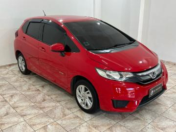

5 MARCAS DE CARRO DE BOM CUSTO E QUALIDADE
A Toyota é amplamente conhecida pela sua durabilidade e baixa manutenção. Embora seus carros não sejam os mais baratos para comprar, a confiabilidade e a baixa depreciação fazem com que sejam uma excelente opção a longo prazo. Modelos populares: Toyota Corolla: Considerado um dos sedãs mais confiáveis e com excelente valor de revenda. Toyota Etios: Um carro de entrada com boa economia de combustível e baixo custo de manutenção. Toyota Yaris: Oferece bom desempenho, conforto e economia Pontos positivos: Alta durabilidade e resistência. Manutenção simples e de baixo custo. Boa revenda e baixo índice de depreciação. Pontos negativos: Preço inicial mais alto em comparação com marcas concorrentes.
A Volkswagen oferece carros com qualidade de construção e tecnologia a preços razoáveis. Além disso, as peças de reposição são r elativamente acessíveis, e seus carros têm uma boa performance e confiabilidade. Modelos populares: Volkswagen Gol: Um dos carros mais vendidos no Brasil, com ótimo custo-benefício, manutenção barata e economia de combustível. Volkswagen Polo: Um hatch compacto de boa performance e baixo custo de manutenção. Volkswagen T-Cross: Um SUV compacto que oferece boa qualidade, desempenho e tecnologia. Pontos positivos: Boa qualidade de construção e desempenho. Baixo custo de manutenção e revenda forte. Pontos negativos: Modelos mais novos podem ter um preço inicial mais elevado. O custo de manutenção pode ser mais alto em alguns modelos.

A Honda é famosa por produzir carros confiáveis, com boa performance e baixo custo de manutenção. A depreciação também tende a ser baixa, o que torna a revenda desses carros vantajosa. Modelos populares: Honda Civic: Um dos sedãs mais confiáveis e duráveis, com bom desempenho e baixo custo de manutenção. Honda Fit: Um hatch com excelente consumo de combustível, confiabilidade e versatilidade. Honda HR-V: Um SUV de bom desempenho, confiável e com boa tecnologia. Pontos positivos: Durabilidade e confiabilidade. Manutenção barata e peças acessíveis. Boa revenda e baixo custo de depreciação. Pontos negativos: Preço inicial relativamente alto.

A Hyundai se consolidou no Brasil principalmente por oferecer carros com design moderno e bom custo-benefício. Modelos como o HB20 são bastante populares, principalmente por sua combinação de bom desempenho e economia de combustível. O Creta, um SUV da marca, também é muito apreciado por seu conforto, espaço e tecnologia, sendo uma ótima opção para quem busca um carro mais robusto e com mais itens de série. A Hyundai também se destaca pela excelente garantia que oferece, de até 5 anos, o que transmite mais confiança aos compradores.
A Fiat é uma das marcas mais tradicionais e populares no Brasil, com uma longa história de presença no país. A marca italiana conquistou o mercado brasileiro ao oferecer veículos com excelente custo-benefício, destacando-se principalmente pelos preços acessíveis, baixo custo de manutenção e a economia de combustível de seus modelos. Entre os carros mais populares da Fiat, estão o Fiat Uno, Fiat Mobi e Fiat Argo. O Uno é um clássico, conhecido por sua simplicidade, robustez e, acima de tudo, pela economia no consumo de combustível, sendo ideal para quem procura um carro pequeno e eficiente. O Fiat Mobi é um dos modelos mais baratos no Brasil, perfeito para quem precisa de um veículo compacto e econômico, mas sem abrir mão de um design moderno. O Argo, por sua vez, é uma opção mais sofisticada, com mais equipamentos de série, oferecendo um bom desempenho e conforto, mas mantendo um preço acessível em comparação com concorrentes da mesma categoria. A Fiat também se destaca por manter uma rede de concessionárias e assistência técnica bem estabelecida, o que facilita o acesso a peças e serviços de manutenção, com um custo mais baixo do que muitas outras marcas. Além disso, a marca tem se esforçado para trazer mais inovação e tecnologias para seus modelos, como central multimídia, conectividade e sistemas de segurança, com destaque para o Fiat Argo, que oferece boa quantidade de recursos em suas versões. No quesito tecnologia e conforto, a Fiat tem feito avanços. Por exemplo, o Fiat Cronos (sedã da marca) oferece. bom espaço interno e recursos interessantes de série, como câmbio automático em versões mais avançadas. Outro ponto positivo é a garantia oferecida pela Fiat, que garante maior tranquilidade para o consumidor.